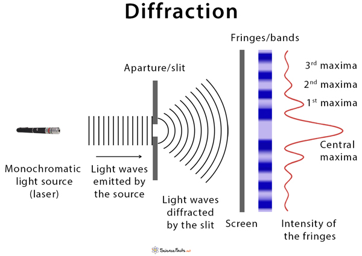
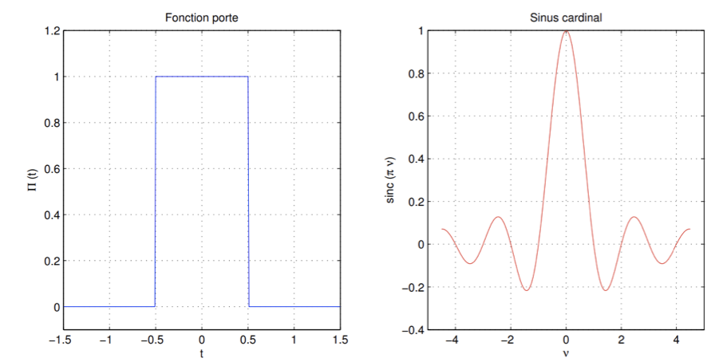
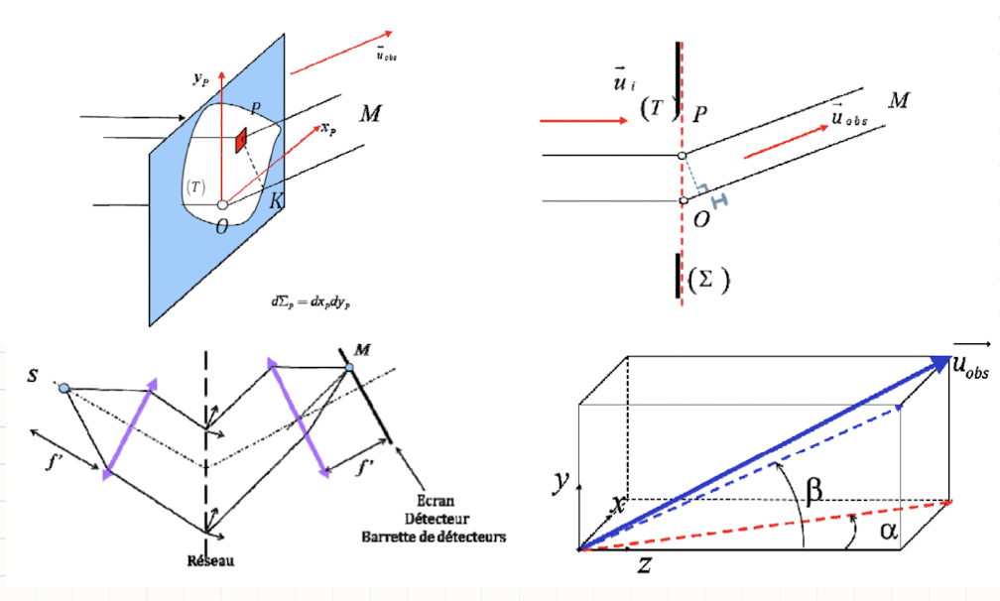
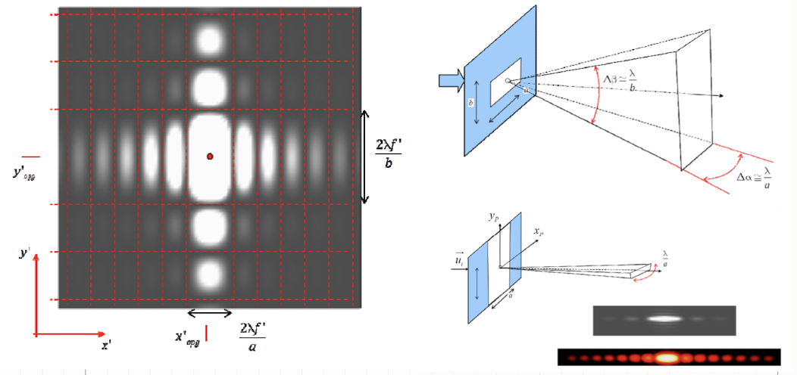
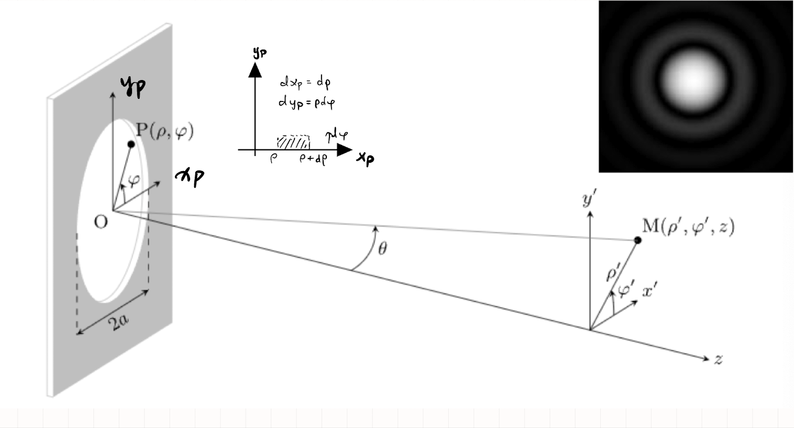
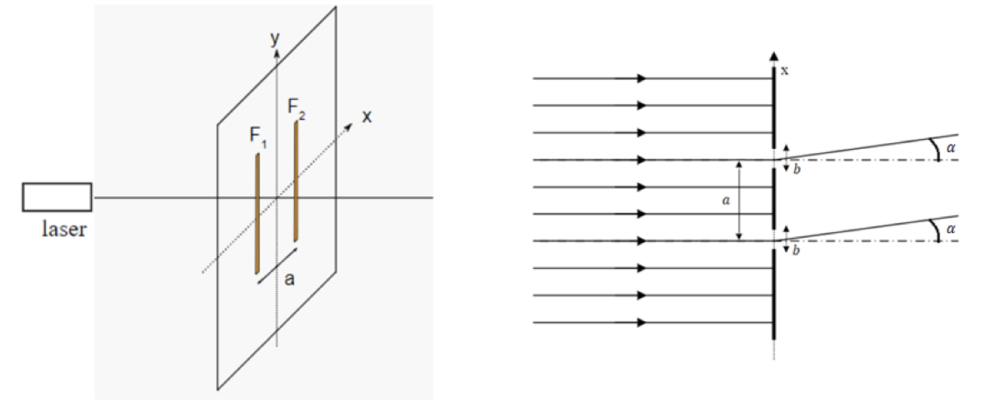
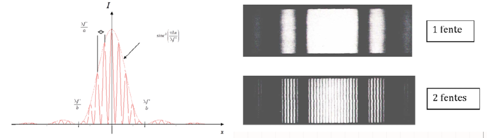
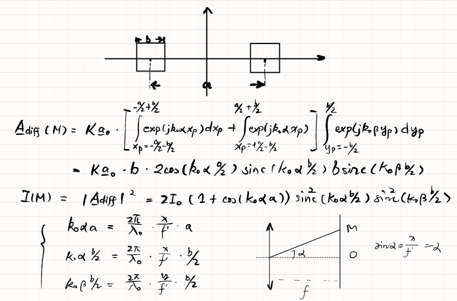
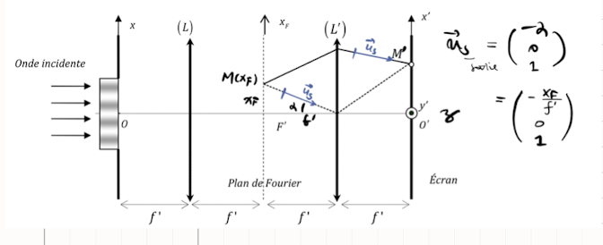

Diffraction

Le principe de Huygens-Fresnel
Principe de Huyghens-Fresnel
-
Principe de Huyghens : Lorsqu'une source ponctuelle émet une onde, tout se passe comme si chaque point de la surface se comportait comme une source ponctuelle secondaire émettant des ondes sphériques.
-
Le phénomène de diffraction : une petite ouverture ne laisse passer que le signal généré par une seule des sources secondaires fictives dans un secteur angulaire d'angle, avec \(\lambda\) longueur d'onde et \(a\) la dimension de l'ouverture :
Preuve : On va le montrer.
-
Formulation de Fresnel :
- Chaque élément, considéré comme une source secondaire ponctuelle, émet une onde d'amplitude complexe proportionnelle à l'onde incident.
-
Le signal observé est la superposition des ondes émises. Le résultat observé au point \(M\) est \(\underline{A}_\text{diff}(M)\), l'intégral de tous les amplitudes d'une donde issue de \(S\), allant jusqu'à \(M\), en passant par \(P \in \Sigma\). Cela implique que :
où \(K\) est un imaginaire pur.
Diffraction de Frauhofer
Construction étape par étape
Calculation des exponentielles complexes
Intégrale de Fourier d'une porte

Démonstration :
Configuration de Frauhofer
- Configuration de Frauhofer : Source \(S\) et observateur \(M\) sont à l'infini. Pour des angles petits, on les exprime

Cas d'une pupille plane en incidence normale
Démonstration :
L'amplitude diffractée dans le cas d'une incidence quelconque
On remplace \(\alpha \mapsto \alpha - \alpha_i,\; \beta \mapsto \beta - \beta_i\)
Démonstration :
Objet de transparence variable
-
On place maintenant devant l'ouverture \((T)\) un objet de transparence \(\tau(P)\) variable, définie par
- \(|\tau(P)|=0\) pour un objet opaque, et pour un objet parfaitement transparent : \(|\tau(P)|=1\)
Donc, la formule générale de l'amplitude diffractée par un objet :
-
La transparence complexe notée \(\underline{\tau}(P)\), la fonction qui modifie l'ampltiude de l'onde par : où \(\phi(P)\) est une augmentation du retard de phase dû au passage au travers de la pupille.
-
Si \(\underline{\tau}(P)\) est réel, alors la pupille se comprte comme une lame d'amplitude. Sinon, c'est une lame de phase.
-
Si \(|\underline{\tau}(P)|<1\), on parle de pupille absorbante.
Ouverture rectangulaire
Fente rectangulaire éclairée par une onde plane
-
Pour une ouverture rectangulaire : L'éclairement diffracté a pour expression
Preuve :
- En incidence non normale, remplace \(\alpha \to \alpha - \alpha_i\) et \(\beta \to \beta - \beta_i\)
-
Quand l'ouverture est centrée en \((x_0,y_0)\), c'est le déphasage de l'onde qui passe par le centre de la pupille, mais \(I_\text{diff}(M)\) aucun changement.
-
Comme \(\mathrm{sinc}^2(u)\) a un pic de largeur \(\Delta u \approxeq \pi\), la lumière est principalement diffractée dans un secteur tel que 
-
Sur l'écran situé dans le plan focal (\(\alpha = f'/a, \; \beta = f'/b\)), les zéros d'éclairement sont les lignes
-
Limite de l'optique géométrique : Si \(\lambda \ll a\) et \(\lambda \ll b\), la figure de diffraction donne un éclairement qui est nul presque partout sauf en \(x'= y'=0\)
Diffraction par une fent très allongée
Si par exemple, une des longueurs \(b\) devient très grande, la diffraction se produit dans un plan perpendiculaire à la fente. On a :
Ouverture circulaire
Ouverture
-
En notant \(P(\rho, \varphi)\) et \(M(\rho',\varphi')\) en coordonnées polaires,  avec
-
Pour une incidence q.q., on obtient une tache d'Airy. Le premier cercle sombre a un rayon :
-
Critère de Rayleigh(?) : Deux tâches lumineuses sont séparées si leurs centres sont distants de plus du rayon de la tâche d’Airy.
Considérons une lentille de diamètre \(D_\text{lentille}\).
{kind=link}
Diffraction par des fentes d'Young
Diffraction par des fentes d'Young
-
Deux Fentes d'Young de largueur \(b\) et espacées de \(a\) peuvent être considérées comme :  L'amplitude observée dans la dirction \(\alpha\) est : Ensuite, en déduire avec \(I_0 = |K\underline{a_0}b|^2\)
-
Cas général :
-
Représentation : 
-
Figure de diffraction de deux trous carrés distants de \(a\) : 
Notions d'Optique de Fourier
Etude de la diffraction par des transparence \(\underline\tau(x_P)\) q.q.
-
Dans le plan de Fourier (plan focal image de la lentille), on a pour \(\tau(x_P) = \underline{\tau}_0\), en supposant la largeur \(L\) est très grande, donc :
-
Diffraction par un objet de transparence sinusoïdale :
- \(\Lambda\) est la période spatiale (unité : \(m\))
- On appelle fréquence spatiale : \(\Sigma = \frac{1}{\Lambda}\)
-
L'amplitude diffractée dans le plan de Fourier :
- Chaque point \(x_F\) du plan de Fourier est assoicé à une fréquence spatiale :
Reconstruction : Montage 4f'

-
Objet de transmission uniform : \(\underline{\tau}(x) = 1\),
-
Objet de transmission sinusoïdale
-
Point de décalé : Si nous prenons un écran \(\tau(x)\) centré en \(x_S \ne 0\), l'amplitude dans le plan de Fourier,
Filtrage
Analogue au filtrage d'un signal électronique.
Prenons un signal :
On le développe en série de Fourier, et on obtient : \(n=1,\; n=3,\; n=5\), respectivement \(u_{e_1}, \; u_{e_3},\; u_{e_5}\).
Ensuite, par passage au travers d'un filtre :
Enfin, par synthèse de Fourier,
-
Filtrage passe-bas
-
Prenons on a trois points dans le plan de Fourier : \(x_F = 0,\; x_F = \pm \lambda f'/ \Lambda\) Supposons que le filtre ne laisse passer
Ce filtre ne laisse passer que les faibles fréquences
\[ \Sigma < \frac{\delta}{\lambda f'} \]
-
-
Filtrage passe-haut - Strioscopie
Pour déterminer les composantes de Fourier on réalise un DL de \(\underline{\tau}\) à l'ordre 1.